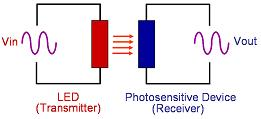

Optocouplers
Optocouplers,
also known as
Opto-isolators,
are devices that provide optical isolation and coupling between two
circuits,
creating physically- and electrically-isolated signal coupling between
them. Optocouplers, which can be assembled using traditional
semiconductor packages, contains both a light emitting diode (LED) and a
photosensitive semiconductor device in the same housing.
The LED and
the photosensitive device of an optocoupler are assembled in close
proximity with each other within the package, arranged in such a way
that the light emitted by the LED would strike the photosensitive device
and trigger it into conduction. The photosensitive device is
usually a transistor, SCR, or triac in normally non-conducting state. In
such an arrangement, therefore, the photo-emitting device is the
transmitter and the photo-sensing device is the receiver.
|
 |
|
Figure 1.
Block Diagram of
an
Optocoupler |
Optocouplers are excellent isolating devices because their coupling
medium is light, allowing very large isolation voltages (several kV's)
between circuits. The coupling light doesn't have to be visible
light - many commercially available optocouplers use infrared light or
even laser beams as transmission medium. The emission travels
through a transparent gap until it gets picked up by the photosensitive
device. The output waveform is identical to the input waveform,
although their amplitudes usually differ.
Opto-isolation
is important in applications where 'fragile' digital
circuits are at risk of being damaged by large transient voltages or
spikes. Even if damage is not imminent, such spikes can make a
circuit malfunction. For instance,
digital circuits that are
used to activate relays that drive large motors can experience inductive
voltage kicks during switching that can produce 'false' triggering
pulses, causing the motors to randomly turn on or off.
Another
common application of optocouplers is in modems, allowing a computer to
be connected to the telephone line without risk of damage from line
transients. Other applications of optocouplers include: 1)
isolated line receivers; 2) computer peripheral interfacing; 3)
digital isolation between ADC's and DAC's; 4) switching power supplies;
5) instrument input-output isolation; and 6) ground loop elimination.
See Also:
Microprocessors; ADC / DAC;
Analog Switches; Luminescence
HOME
Copyright
©
2005
EESemi.com.
All Rights Reserved.